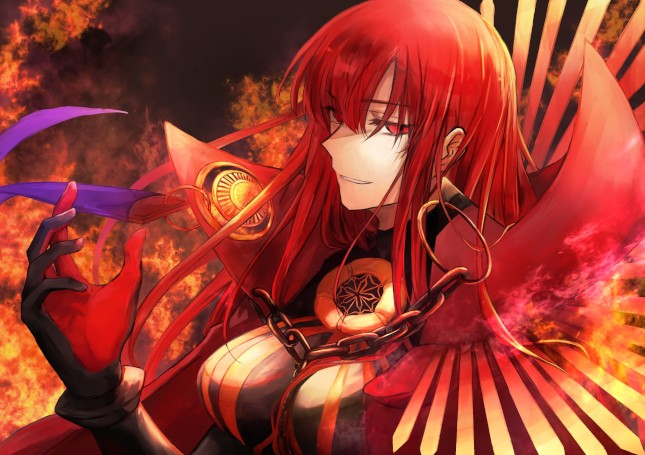

PSYCHO
HISTORIA
Após Hela aceita o convite da Eva elas vão para uma basse secreta , lá Eva fala para Hela o propósito dessa basse e um pouco da história dela , depois de escutar toda a história Hela faz uma espreçao de alegria por que ela pensou que se ela ajudasse esse povo seria bem mais interessante do que ficar ajudando gente inútil sem fala que com eles seria bem emocionante ser do lado "errado" do que me se fuder pra salvar terceiros. Ela topa ajudar eles e no mesmo dia ela já saí pra fazer uma missão pra eles e mais uma , mais uma e por aí em diante , depois de inúmeras missões feitas e ter ganhado um posto elevado dentro da organização ela tmb teve uma melhora significativa sobre o usu de seu poder já que só durante o batalha final contra o Astérion que ela se soltou pela primeira vez , dentre essa melhoras a mais importante e o fato das memórias não a afetarem mais já que devido as missões ela teve que absorver um grande quantia de memória até chegar num ponto onde essas não a afetam mais , dentre esses memórias tem uma de uma que ela focou para aprender com ela a memória de um mestre de artes marciais tanto de corpo a corpo quanto de armas brancas também tem uma bem importante que e a de um agente de cada organização inimiga, ela também aprendeu a usar um tipo de teleporte usando a telecinese e juntamente para usar isso de maneira mais eficiente ela desenvolveu um tipo de clarividência combinado sua telecinese com a telepatia para ver lugares muito distante e se teletransportar pra lá e teve muitas outras "habilidade" que ela aprendeu .
obgetivos: conseguir infos sobre o laboratorio que me criou conversar com o apolo descobrir pq o vovo me odeia tanto FRANCIS BERTA . ITALIA decobertas: minha vida intera foi um progeto e tudo e todos que conviverao comigo fasia parte disso (mesmo sem eles saberem)
PODER
status:
- Hp: 00
- P.a: 18
- Poder: 0
- Fisico: 1
- Presença: 1
- Inteligencia: 3
skills:
- Forma Psyonica
- Precognição
- Clarividencia
- sexto sentido
- Teletransporte Telecinético
INVENTARIO
- Traje Militar
- Uma katana japonesa